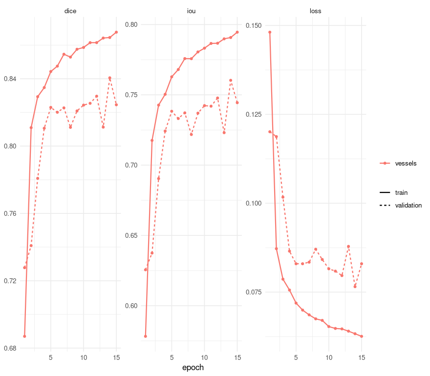

Retinal vessels: tiling, and a metric Dice cannot replace
The other vignettes work on images small enough to hand a network whole. This one does not, and that is the point: a retinal fundus photograph is 2048 x 2048, the thing to find in it is about nine pixels wide, and resizing to fit the model destroys the measurement before the model ever sees it.
Three things here appear in no other vignette, and each is the reason this dataset was chosen.
It tiles. splits reads each image at full resolution and cuts it into a grid of inputs.
It is scored on a metric Dice cannot stand in for. clDice asks whether a structure is connected rather than whether its pixels coincide - and a skeleton is a property of a whole mask, so it is measured on the reassembled image rather than on the tiles.
It reports per disease rather than as one mean, which is how the interesting thing about this dataset was found - and the interesting thing turns out not to be about the disease.
Why a vessel cannot be resized
FIVES images are 2048 x 2048, and the obvious move is to resize them to something a U-Net is comfortable with. It is the wrong move here, and the reason is a measurement rather than a preference.
A FIVES vessel is about nine pixels wide - measured as mask area over skeleton length, over six random masks, on the engine side where the skeleton lives. Resized to 256 the same vessels are about 1.2 pixels. That matters because of what happens at one pixel: shift a one-pixel structure by a single pixel and it overlaps the truth nowhere at all, so Dice, IoU and clDice alike read zero and none of them can tell a near miss from a total failure. Tiling keeps the data out of that regime, which is what splits is for.
(The nine-pixel figure corrects the one-to-five this dataset is usually described with. One to five is what remains after a resize - a property of the preprocessing, not of the retina.)
The data
One 1.7 GB download from figshare 19688169, CC BY 4.0. The authors’ own split is already balanced across the four groups - 150 train and 50 test of each - so it is used rather than replaced. Point PLATYPUS_FIVES at the unpacked directory.
The dataset is laid out as Original/ and Ground truth/ with matching file names, which is not a layout platypus discovers on its own, so the pairs are written into a CSV:
root <- file.path(
Sys.getenv("PLATYPUS_FIVES"),
"FIVES A Fundus Image Dataset for AI-based Vessel Segmentation"
)
stopifnot(dir.exists(root))
write_split <- function(split, path) {
# `pattern` rather than everything in the directory: the archive ships a `Thumbs.db`
# beside the 600 training images, and a Windows thumbnail cache is not a fundus
# photograph. Filtering by extension is also what keeps the pairing below honest.
images <- sort(list.files(
file.path(root, split, "Original"), pattern = "\\.png$", full.names = TRUE
))
frame <- data.frame(
# The key is what `evaluate_cases()` reports and what `group_by` reads. Without it a
# case is called `row 55`, which names nothing on disk and cannot be grouped.
key = tools::file_path_sans_ext(basename(images)),
images = images,
masks = file.path(root, split, "Ground truth", basename(images))
)
stopifnot(all(file.exists(frame$masks)))
write.csv(frame, path, row.names = FALSE)
nrow(frame)
}
splits <- file.path(tempdir(), c(train = "train.csv", test = "test.csv"))
names(splits) <- c("train", "test")
c(train = write_split("train", splits[["train"]]), test = write_split("test", splits[["test"]]))
#> train test
#> 600 200The disease is in the file name - _N, _A, _D, _G for normal, AMD, diabetic retinopathy and glaucoma - which is what the grouping below reads.
Two things that cost time if taken on trust rather than checked: the archive ships a Thumbs.db beside the training images, so the listing is filtered by extension; and the masks are paired by name, which stopifnot above asserts rather than assumes.
The configuration
spec <- platypus_spec(
task = "semantic_segmentation",
data = segmentation_data(
train = splits[["train"]],
validation = splits[["test"]],
colormap = list(c(0, 0, 0), c(255, 255, 255)),
mode = "config_file"
),
models = list(
u_net(
name = "vessels",
input_shape = c(512, 512),
# 2048 read whole and cut 4 x 4. This is the field the vignette exists for.
splits = c(4, 4),
blocks = 4,
filters = 16,
batch_size = 4,
epochs = 15,
loss = loss_cce_dice(),
metrics = list(
metric_dice(include_background = FALSE),
metric_iou(include_background = FALSE),
# Measured on the reassembled image by `evaluate_cases()`, not per tile.
metric_cldice(include_background = FALSE)
),
optimizer = optimizer_adam(learning_rate = 1e-3),
augmentation = list(
augmentation_step("HorizontalFlip", p = 0.5),
augmentation_step("VerticalFlip", p = 0.5)
)
)
),
seed = 1
)
spec
#> platypus specification
#> data : /tmp/RtmpVB2D1P/train.csv
#> classes : 2
#> models : 1
#> vessels u_net 512x512, tiled 4x4, cce_dice, 15 epochsTwo things about that worth saying out loud.
metric_cldice() sits beside metric_dice() even though the run is tiled, and the engine reassembles each case before measuring it. It will not appear in the epoch log, and that is deliberate rather than an omission: an epoch averages its metrics over batches, which is exact for Dice - a ratio of sums - and meaningless for a skeleton, because a tile severs every vessel crossing its edge. So there is no val_cldice to watch, and a callback that tried would be refused when the specification is read.
Fifteen epochs rather than the forty this model wants, because a vignette that takes seven hours to rebuild is a vignette nobody rebuilds. The shape of the result is the same; the numbers are a little worse than the model can do.
Training
fit <- platypus_fit(spec)
fit
#> platypus fit
#> models : vessels
#> device : NVIDIA GeForce GTX 1070 (torch 2.7.1+cu126)
#> epochs : vessels=15
#> next : evaluate(fit), predict(fit, "vessels")plot(fit)
plot of chunk history
One number hides the finding
evaluate(fit)
#> model architecture loss_function parameters epochs_run best_epoch
#> 1 vessels u_net cce_dice 1942594 15 14
#> loss dice iou
#> 1 0.08298772 0.8245449 0.7444261That is the whole test set as one row, and it is the least informative view of it. The distribution is the finding, and summary() gives it - including which case is the worst, because the first thing anyone does with a low score is go and look at that image:
per_case <- evaluate_cases(fit)
summary(per_case)
#> metric n mean sd median min max worst_case
#> 1 dice 200 0.8627708 0.1306916 0.8993968 0.003530593 0.9585154 122_G
#> 2 iou 200 0.7757107 0.1521915 0.8171857 0.001784613 0.9203358 122_G
#> 3 cldice 200 0.8121221 0.1541454 0.8553965 0.001392360 0.9600197 122_GNow by the disease in the file name. group_by pools a group’s cases into one score, the way a patient’s slices would be pooled:
evaluate_cases(fit, group_by = "_([NADG])$")
#> platypus scores by group (4 rows)
#> group dice iou cldice
#> A 0.9117221 0.8377660 0.8601317
#> D 0.8848882 0.7935422 0.8072511
#> G 0.8835303 0.7913608 0.7376148
#> N 0.8893173 0.8006943 0.8434907Pooling answers “how good is it on this group”. It does not show the spread, and the spread is where this dataset is interesting, so that comes off the per-case rows:
diseases <- c(N = "normal", A = "AMD", D = "diabetic retinopathy", G = "glaucoma")
per_case$disease <- diseases[sub(".*_([NADG])$", "\\1", per_case$case)]
spread <- function(x) c(n = length(x), mean = mean(x), sd = sd(x), worst = min(x))
round(t(vapply(split(per_case$dice, per_case$disease), spread, numeric(4))), 4)
#> n mean sd worst
#> AMD 50 0.9024 0.0633 0.6808
#> diabetic retinopathy 50 0.8650 0.0951 0.4884
#> glaucoma 50 0.7992 0.2162 0.0035
#> normal 50 0.8845 0.0581 0.6506Compare that table with the pooled one above and the reason for having both becomes concrete. Pooled, glaucoma and diabetic retinopathy are within a few thousandths of each other. Per case, glaucoma’s mean is five points lower and its spread is more than twice as wide, with a worst case near zero. Pooling hid it because Dice is a ratio of sums: fifty images’ counts added together are dominated by the ones with the most vessel to find, and a photograph the model failed on contributes little to the numerator and little to the denominator.
Before concluding that the model is worse at the disease whose row is worst, check whether it is the group whose photographs are worse. FIVES ships a Quality Assessment.xlsx grading every image for illumination, blur and contrast; nothing in this pipeline reads it, and when it is joined to these scores the ordering above changes substantially. The engine’s measurement of that is in measurements/fives/quality.py in the project’s workbench.
That is the general lesson rather than a fact about retinas: a per-group table is worth having precisely because it invites the question why is this group different, and the first answer is rarely the right one.
clDice beside Dice
Read those two numbers together, because they say different things. The correlation is high: the two metrics rank the cases much the same way, so clDice is not finding a different set of bad images. The mean difference is negative and not small: clDice sits about five points below Dice, which says the vessels this model draws are less connected than their pixel overlap suggests. It is getting the right pixels and breaking the lines.
That gap is a property of the model rather than of the metric, and the engine’s own run of the same configuration is the evidence: at forty epochs instead of fifteen the two agree to a correlation of 0.978 and a mean difference of +0.004. The better-trained model closes the gap. So a large negative gap here is not clDice being pessimistic - it is clDice measuring the thing that fifteen epochs had not finished learning, and Dice not noticing.
What this vignette cannot show yet
The obvious next panel is the worst case drawn - image, truth and prediction side by side, which is how the quality finding above was noticed in the first place. It is not here because predict() returns the whole split as one array, and this split is 200 images of 2048 x 2048: several gigabytes before anything is drawn. The engine grew a streaming form for exactly this (pyplatypus#178), and the R surface for it has not been built yet - so for now the figure belongs to the engine’s own example rather than to this document.
Worth stating rather than quietly omitting: it is the one thing on this page that the Python half can do and this half cannot.
Notes
The card. This was precomputed on a GTX 1070, which is a Pascal-generation GPU and needs the last PyTorch built against CUDA 12. platypus_use_torch("pascal") asks for it, and it has to be called before anything starts the engine. Without it this machine trains on the processor and says so. platypus_device() reports what yours can see.
The cost. Fifteen epochs over 600 retinas at 2048, cut sixteen ways, takes a few hours on that card; scoring the 200 test images - including reassembling each one for clDice - takes about two minutes. Tiling is what makes the first number bearable: a tiled run reuses each decoded image for all of its tiles, which is worth roughly a factor of two.